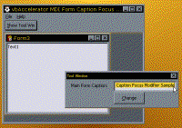

VB5 Title Bar Focus Sample (19K)
VB5 Title Bar Focus Sample (19K)
 VB6 TitleBar Focus Sample (19K)
VB6 TitleBar Focus Sample (19K)
 25 Aug 1999
25 Aug 1999
First Posted
 vbAccelerator Toolbar and CoolMenu Control v3.5
vbAccelerator Toolbar and CoolMenu Control v3.5
 Subclassing Without The Crashes
Subclassing Without The Crashes
 vbAccelerator Drop-Down and Popup Form Control
vbAccelerator Drop-Down and Popup Form Control

Keep Form Titlebars in Focus when ToolWindows are Shown
Allow your VB app to behave like Office Applications when ToolWindows and Find/Replace Dialogs are in view.
The ToolWindow style, introduced with VB4, allowing you to easily create pop-up tool windows with small captions. However, there is (and has always been) a problem with them: whenever the form or a control on it gets the focus, it appears that the main form of your application looses focus. Whilst maybe this isn't the worst user-interface crime in the world, it is annoying and makes your application look unprofessional compared to the smoother behaviour in Word, Excel, DevStudio etc.
This subclassing sample demonstrates how to fix the title bar problem with a working but, erm, rather slimy hack.
The code here is the basis for the code used in the vbAccelerator Drop-Down Form Control and is also incorporated directly into the vbAccelerator Toolbar, Rebar and CoolMenu control.
Note: As is, this code is not suitable if your application can have multiple main form windows. You can enhance the code to support this however by creating a module to track which is the active main form.
How It Works
Changing the appearance of a VB form's title bar is one of the things VB makes it very difficult to do. Whenever a Window's title bar needs to change state from active to inactive, Windows sends a WM_NCACTIVATE message to the window. In a simple C Windows application you could simply intercept this message and consume it rather than sending it to the DefWindowProc.
In VB, it isn't so easy. VB appears to use the WM_NCACTIVATE message for its own purposes. If you eat this message, your VB form either stops responding to the mouse or keyboard, or the program goes into a continous loop and can only be stopped with Ctrl-Alt-Del.
Another possible alternative is intercepting the WM_NCPAINT message. Windows sends this whenever any part of the non-client area needs to be repainted (including the form border, the titlebar, the menu bar and so on). If you consume this message you can write all the non-client area drawing code yourself - and that means you can paint the titlebar focused when it would normally be non-focused. Whilst I played with this solution for quite a while, my experiences with indicate that Windows does not play fair with the WM_NCPAINT message, and it is a pretty tricky thing to do. My current state-of-the art work on hacking around this is the NeoCaption sample.
Another solution is required. It turns out there is a simple one, but it is a bit of a slimy hack, as you're going to see..
The Code
This technique involves subclassing for three messages:
- WM_NCACTIVATE
- WM_ACTIVATEAPP
- WM_ACTIVATE
When WM_NCACTIVATE is received, the code first calls LockWindowUpdate to prevent any changes being shown to the user.
Tip: Successful LockWindowUpdate
LockWindowUpdate is an excellent call in that it completely stops window repainting and thereby speeds things up and stops distracting flicker. But you have to be careful when using it. If you cover or expose any area of another window whilst LockWindowUpdate is on, as soon as you turn it off again the entire desktop repaints, this is very slow, and causes probably worse flickering than if it wasn't turned on in the first place! So when using LockWindowUpdate, ensure you apply it to a window that does not change size or move. Often the parent window is a better choice than the window being updated.
With window updating locked, it then calls the VB window procedure with the as received WM_NCACTIVATE parameters. Normally this would redraw the title bar inactive, but because updates are switched off, the display is not updated. The code then calls WM_NCACTIVATE again, but with the parameters set to indicate that the window should be active. This sets the title bar back to the right display but enables the form to keep working correctly. Finally we turn LockWindowUpdate back off again to make the display correct.
That ensures that the titlebar keeps an active appearance when a non-modal form is displayed, but we need to make a few more modifications to hold that appearance when you display a modal form. Showing a modal form can be detected because Windows will repeatedly try to call WM_NCACTIVATE until the title bar state is changed correctly. Normally directly after the WM_NCACTIVATE message there is a WM_ACTIVATE message. So to detect a modal form being shown, and to allow the title bar to update, we can use a static variable to count the number of times the WM_NCACTIVATE message has been sent between WM_ACTIVATE messages. If this exceeds 2 we assume a modal form is being displayed and allow the default processing to occur.
The final processing is to detect the WM_ACTIVATEAPP message. This tells the code whether the entire app (all forms) has gained or lost the focus, and since it fires after the WM_NCACTIVATE message we can update the titlebar in response.
Private Property Get ISubclass_MsgResponse() As EMsgResponse
Select Case CurrentMessage
Case WM_NCACTIVATE
ISubclass_MsgResponse = emrConsume
Case Else
ISubclass_MsgResponse = emrPostProcess
End Select
End Property
Private Function ISubclass_WindowProc( _
ByVal hWnd As Long, _
ByVal iMsg As Long, _
ByVal wParam As Long, _
ByVal lParam As Long _
) As Long
Static iRefCount As Long
Select Case iMsg
Case WM_NCACTIVATE
If wParam = 0 Then
iRefCount = iRefCount + 1
If iRefCount < 3 Then
LockWindowUpdate hWnd
ISubclass_WindowProc = CallOldWindowProc( _
hWnd, iMsg, wParam, lParam)
CallOldWindowProc m_hWnd, WM_NCACTIVATE, 1, 0
LockWindowUpdate 0
Else
ISubclass_WindowProc = CallOldWindowProc( _
hWnd, iMsg, wParam, lParam)
End If
Else
ISubclass_WindowProc = CallOldWindowProc( _
hWnd, iMsg, wParam, lParam)
End If
Case WM_ACTIVATEAPP
If (wParam = 0) Then
iRefCount = 0
' app being deactivated
CallOldWindowProc m_hWnd, WM_NCACTIVATE, 0, 0
Else
' app being activated
' if not the active form then we should repaint
' the title bar
CallOldWindowProc m_hWnd, WM_NCACTIVATE, 1, 0
End If
Case WM_ACTIVATE
If wParam = 0 Then
iRefCount = 0
' deactivating the window, lParam is
' the window that is being activated.
End If
Case WM_DESTROY
' In case the user does not set the class
' to nothing before the owning form is
' closed:
Detach
End Select
End Function
As usual, using this code is somewhat more simple that writing it. Just reference SSubTmr.DLL (or SSubTmr6.DLL for the VB version), include the cActiveTitleBar class and call it like this:
Option Explicit Private m_cATBar As cActiveTitleBar Private Sub Form_Load() m_cATBar.Attach Me.hWnd End Sub
That's it! Just add the code to all non-modal forms and you are done.